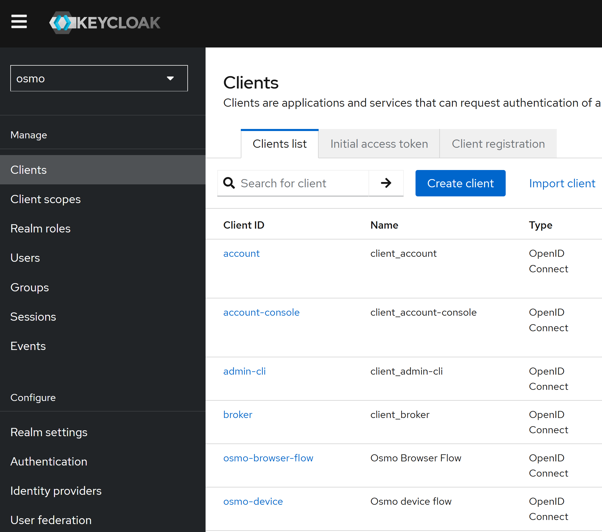
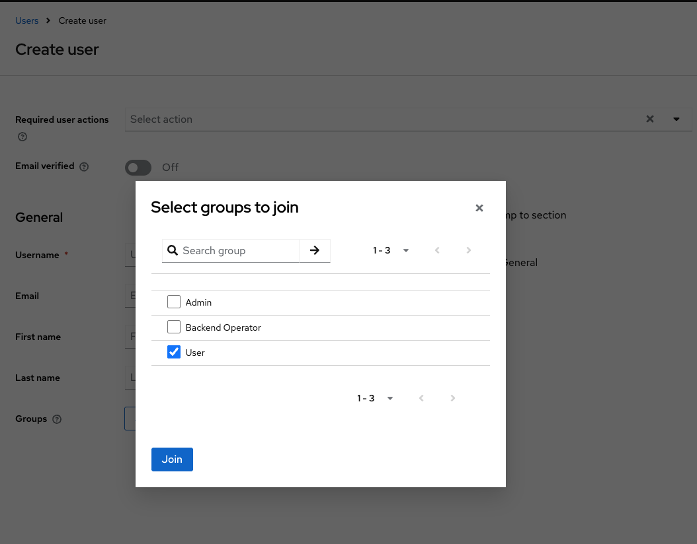

Deploy Service#
This guide provides step-by-step instructions for deploying OSMO service components on a Kubernetes cluster.
Components Overview#
OSMO deployment consists of several main components:
Component |
Description |
|---|---|
API Service |
Workflow operations and API endpoints |
Router Service |
Routing traffic to the API Service |
Web UI Service |
Web interface for users |
Worker Service |
Background job processing |
Logger Service |
Log collection and streaming |
Agent Service |
Client communication and status updates |
Delayed Job Monitor |
Monitoring and managing delayed background jobs |

Step 1: Configure PostgreSQL#
Create a database for OSMO using the following command. Omit export OSMO_PGPASSWORD=...
and PGPASSWORD=$OSMO_PGPASSWORD if PostgreSQL was configured without a password.
$ export OSMO_DB_HOST=<your-db-host>
$ export OSMO_PGPASSWORD=<your-postgres-password>
$ kubectl apply -f - <<EOF
apiVersion: v1
kind: Pod
metadata:
name: osmo-db-ops
spec:
containers:
- name: osmo-db-ops
image: alpine/psql:17.5
command: ["/bin/sh", "-c"]
args:
- "PGPASSWORD=$OSMO_PGPASSWORD psql -U postgres -h $OSMO_DB_HOST -p 5432 -d postgres -c 'CREATE DATABASE osmo;'"
restartPolicy: Never
EOF
Check that the process Completed with kubectl get pod osmo-db-ops. Then delete the pod with:
$ kubectl delete pod osmo-db-ops
If using keycloak as the SSO provider, create a database for keycloak using the following command.
Omit export OSMO_PGPASSWORD=... and PGPASSWORD=$OSMO_PGPASSWORD if PostgreSQL was
configured without a password.
$ export OSMO_DB_HOST=<your-db-host>
$ export OSMO_PGPASSWORD=<your-postgres-password>
$ kubectl apply -f - <<EOF
apiVersion: v1
kind: Pod
metadata:
name: osmo-db-ops
spec:
containers:
- name: osmo-db-ops
image: alpine/psql:17.5
command: ["/bin/sh", "-c"]
args:
- "PGPASSWORD=$OSMO_PGPASSWORD psql -U postgres -h $OSMO_DB_HOST -p 5432 -d postgres -c 'CREATE DATABASE keycloak;'"
restartPolicy: Never
EOF
Check that the process Completed with kubectl get pod osmo-db-ops. Then delete the pod with:
$ kubectl delete pod osmo-db-ops
Step 2: Configure Keycloak#
Keycloak enables OSMO to authenticate users with different identity providers and efficiently manage users in groups and roles. Learn more at Authentication Flow.
For more details of keycloak setup see the Keycloak Documentation
Follow the steps below to set up Keycloak.
Install Keycloak using Bitnami Helm chart#
Add the Bitnami Helm repository:
$ helm repo add bitnami https://charts.bitnami.com/bitnami
$ helm repo update
Create a
keycloak-values.yamlfile with the following configuration:
keycloak-values.yaml
# Override the default image to use our own registry to not rely on the bitnami registry
global:
security:
allowInsecureImages: true
image:
registry: docker.io
repository: bitnamilegacy/keycloak
tag: 26.1.1-debian-12-r0
# Hostname configuration
hostname: auth-<your-domain>
proxy: edge
# Production mode
production: true
tls:
enabled: true
autoGenerated: true
# Admin user credentials
auth:
adminUser: admin
adminPassword: your-secure-password # Change this!
# Ingress configuration
ingress:
enabled: true
tls: true
ingressClassName: <your-ingress-class> # e.g., nginx, alb
hostname: auth-<your-domain>
annotations:
# Add additional ingress-specific annotations here to match your ingress controller's annotations
# Example for AWS ALB:
# alb.ingress.kubernetes.io/target-type: ip
## the group name and order are used to group the ingress rules together and ensure they are processed in the correct order
# alb.ingress.kubernetes.io/group.name: osmo
# alb.ingress.kubernetes.io/group.order: "0"
## the scheme is used to specify the scheme of the ingress rule, internet-facing for public ALB and internal for private ALB
# alb.ingress.kubernetes.io/scheme: internet-facing
# alb.ingress.kubernetes.io/certificate-arn: <your-ssl-cert-arn>
# alb.ingress.kubernetes.io/listen-ports: '[{"HTTPS":443}]'
# alb.ingress.kubernetes.io/ssl-redirect: '443'
path: /
pathType: Prefix
servicePort: 80
# Autoscaling configuration
autoscaling:
enabled: true
minReplicas: 2
maxReplicas: 3
targetCPU: 80
targetMemory: 80
# Resource allocation
resources:
requests:
cpu: "500m"
memory: "512Mi"
limits:
cpu: "2"
memory: "1Gi"
# Database configuration
# Option 1: External Database
postgresql:
enabled: false
externalDatabase:
host: "<your-db-host>"
port: 5432
user: "<your-db-user>"
database: "keycloak"
existingSecret: "keycloak-db-secret"
existingSecretPasswordKey: "postgres-password"
# Option 2: Built-in PostgreSQL (for testing)
# postgresql:
# enabled: true
# Additional environment variables
extraEnvVars:
- name: KC_HOSTNAME_STRICT_HTTPS
value: "true"
- name: KC_PROXY
value: "edge"
Create the namespace for Keycloak:
$ kubectl create namespace keycloak
If you are using an external database, create a secret for the database password:
$ kubectl create secret generic keycloak-db-secret \
--namespace keycloak \
--from-literal=postgres-password='<your-db-password>'
Install Keycloak using Helm:
$ helm install keycloak bitnami/keycloak \
--version 24.4.9 \
--namespace keycloak \
-f keycloak-values.yaml
Verify the installation:
$ kubectl get pods -n keycloak
$ kubectl get ingress -n keycloak
Note
To access the Keycloak instance, you need to configure DNS records to point to your load balancer, for example you should create a record for auth-osmo.example.com to point to the load balancer IP.
If you have DNS configured, you can access the Keycloak instance at https://auth-osmo.example.com.
If you do not have DNS configured, you can access the Keycloak via port forwarding:
$ kubectl port-forward service/keycloak 32080:80 -n [your-namespace]
Post-Installation Keycloak Configuration#
Access your Keycloak instance at
https://auth-osmo.example.comLog in with the admin credentials specified in the values file
{kind=link}
Create a new realm for OSMO:
Download the sample realm file:
sample_osmo_realm.jsonClick on the dropdown menu on the top left which says
masterand selectCreate Realm
Enter the downloaded realm file in the
Resource filefield and click onCreate
You will then be redirected to the
osmorealm
Click on the
Clientstab and for each of theosmo-browser-flowandosmo-deviceclients, update the client settings to the following:Root URL:
https://osmo.example.comHome URL:
https://osmo.example.comAdmin URL:
https://osmo.example.comValid Redirect URIs:
https://osmo.example.com/*Web Origins:
https://osmo.example.com
Note
Please replace
osmo.example.comwith your actual OSMO domain name.On the
osmo-browser-flowclient details page, click on theCredentialstab and create and save a client secret that will be used for envoy later.
{kind=link}
{kind=link}
{kind=link}
Creating Users#
Users can be created directly in the Keycloak admin console. Create a user with the email and a temporary password. During their first login, they will be prompted to reset their password.
Go to the
UserstabClick on the
Add UserbuttonFill in the user details, add the user to the group
UserorAdmindepending on the role you want to assign to the user and save the user
Note
The
Admingroup is reserved for administrators with elevated permissions for configuring OSMO and managing users. TheUsergroup is reserved for users with basic permissions for submitting workflows and managing their own workflows.Click on the user’s ID to access their settings, in the
Credentialstab enter a password and confirm it with the temporary password setting enabled

When the temporary password setting is enabled, the user will be forced to change their password upon their first login
{kind=link}
See also
Keycloak can also be configured to log in with your chosen identity provider. For detailed instructions on configuring SSO with identity providers in Keycloak, refer to the official Keycloak documentation .
Step 3: Create Namespace and Secrets#
Create a namespace to deploy OSMO:
$ kubectl create namespace osmo
Create a secret for database and redis passwords:
$ kubectl create secret generic db-secret --from-literal=db-password=<your-db-password> --namespace osmo
$ kubectl create secret generic redis-secret --from-literal=redis-password=<your-redis-password> --namespace osmo
Create a secret with Keycloak client secret from Post-Installation Keycloak Configuration and HMAC secret to use with OSMO’s envoy sidecar:
$ kubectl create secret generic oidc-secrets \
--from-literal=client_secret=<keycloak-client-secret> \
--from-literal=hmac_secret=$(head -c32 /dev/urandom | base64) \
--namespace osmo
Note
The client secret is used to authenticate with the Keycloak server, this was configured in the Keycloak section. The HMAC secret is used to sign the JWT tokens, this is can be a random generated string.
Create the master encryption key (MEK) for database encryption:
Generate a new master encryption key:
The MEK should be a JSON Web Key (JWK) with the following format:
{"k":"<base64-encoded-32-byte-key>","kid":"key1","kty":"oct"}
Generate the key using OpenSSL:
# Generate a 32-byte (256-bit) random key and base64 encode it $ export RANDOM_KEY=$(openssl rand -base64 32 | tr -d '\n') # Create the JWK format $ export JWK_JSON="{\"k\":\"$RANDOM_KEY\",\"kid\":\"key1\",\"kty\":\"oct\"}"
Base64 encode the entire JWK:
$ export ENCODED_JWK=$(echo -n "$JWK_JSON" | base64 | tr -d '\n') $ echo $ENCODED_JWK
Create the ConfigMap with your generated MEK:
$ kubectl apply -f - <<EOF apiVersion: v1 kind: ConfigMap metadata: name: mek-config namespace: osmo data: mek.yaml: | currentMek: key1 meks: key1: $ENCODED_JWK EOF
Warning
Security Considerations:
Store the original JWK securely as you’ll need it for backups and recovery
Never commit the MEK to version control
Use a secure key management system, such as Vault or secrets manager in production
The MEK is used to encrypt sensitive data in the database
Example MEK generation script:
#!/bin/bash
# Generate MEK for OSMO
# Generate random 32-byte key
$ export RANDOM_KEY=$(openssl rand -base64 32 | tr -d '\n')
# Create JWK
$ export JWK_JSON="{\"k\":\"$RANDOM_KEY\",\"kid\":\"key1\",\"kty\":\"oct\"}"
# Base64 encode the JWK
$ export ENCODED_JWK=$(echo -n "$JWK_JSON" | base64 | tr -d '\n')
$ echo "Encoded JWK: $ENCODED_JWK"
# Create ConfigMap
$ kubectl apply -f - <<EOF
apiVersion: v1
kind: ConfigMap
metadata:
name: mek-config
namespace: osmo
data:
mek.yaml: |
currentMek: key1
meks:
key1: $ENCODED_JWK
EOF
Step 4: Prepare Values#
Create a values files for each OSMO component
Create osmo_values.yaml for osmo with the following sample configurations:
osmo_values.yaml
# Global configuration shared across all OSMO services
global:
osmoImageLocation: nvcr.io/nvidia/osmo
osmoImageTag: <version>
serviceAccountName: osmo
logs:
enabled: true
logLevel: DEBUG
k8sLogLevel: WARNING
# Individual service configurations
services:
# Configuration file service settings
configFile:
enabled: true
# PostgreSQL database configuration
postgres:
enabled: false
serviceName: <your-postgres-host>
port: 5432
db: <your-database-name>
user: postgres
# Redis cache configuration
redis:
enabled: false # Set to false when using external Redis
serviceName: <your-redis-host>
port: 6379
tlsEnabled: true # Set to false if your Redis does not require TLS
# Main API service configuration
service:
scaling:
minReplicas: 1
maxReplicas: 3
hostname: <your-domain>
auth:
enabled: true
device_endpoint: https://auth-<your-domain>/realms/osmo/protocol/openid-connect/device
device_client_id: osmo-device
browser_endpoint: https://auth-<your-domain>/realms/osmo/protocol/openid-connect/auth
browser_client_id: osmo-browser-flow
token_endpoint: https://auth-<your-domain>/realms/osmo/protocol/openid-connect/token
logout_endpoint: https://auth-<your-domain>/realms/osmo/protocol/openid-connect/logout
# Ingress configuration
ingress:
ingressClass: <your-ingress-class> # e.g. alb, nginx
albAnnotations:
enabled: false # Set to true if using AWS ALB
# sslCertArn: <your-ssl-cert-arn> # Set to the ARN of the SSL certificate for the ingress if using AWS ALB
sslEnabled: false # Set to true if managing SSL at the ingress level
annotations:
## when using nginx ingress, add the following annotations to handle large OAuth2 response headers from identity providers
# nginx.ingress.kubernetes.io/proxy-buffer-size: "16k"
# nginx.ingress.kubernetes.io/proxy-buffers: "8 16k"
# nginx.ingress.kubernetes.io/proxy-busy-buffers-size: "32k"
# nginx.ingress.kubernetes.io/large-client-header-buffers: "4 16k"
## when using AWS ALB in addtional to the default alb annotations,
## add the following annotations to specify the scheme of the ingress rules
# alb.ingress.kubernetes.io/scheme: internet-facing # set to internal for private subnet ALB
# alb.ingress.kubernetes.io/listen-ports: '[{"HTTPS":443}]'
# alb.ingress.kubernetes.io/ssl-redirect: '443'
# Resource allocation
resources:
requests:
cpu: "1"
memory: "1Gi"
limits:
memory: "1Gi"
# Worker service configuration
worker:
scaling:
minReplicas: 1
maxReplicas: 3
resources:
requests:
cpu: "500m"
memory: "400Mi"
limits:
memory: "800Mi"
# Logger service configuration
logger:
scaling:
minReplicas: 1
maxReplicas: 3
resources:
requests:
cpu: "200m"
memory: "256Mi"
limits:
memory: "512Mi"
# Agent service configuration
agent:
scaling:
minReplicas: 1
maxReplicas: 1
resources:
requests:
cpu: "100m"
memory: "128Mi"
limits:
memory: "256Mi"
# Delayed job monitor configuration
delayedJobMonitor:
replicas: 1
resources:
requests:
cpu: "200m"
memory: "512Mi"
limits:
memory: "512Mi"
# Sidecar container configurations
sidecars:
# Global Envoy proxy configuration
envoy:
enabled: true
# Use Kubernetes secrets as reference for the OIDC secrets
useKubernetesSecrets: true
# Paths that don't require authentication
skipAuthPaths:
- /api/version
- /api/auth/login
- /api/auth/keys
- /api/auth/refresh_token
- /api/auth/jwt/refresh_token
- /api/auth/jwt/access_token
- /client/version
# Service configuration
service:
port: 8000
hostname: <your-domain>
address: 127.0.0.1
# OAuth2 filter configuration
oauth2Filter:
enabled: true
# Keycloak endpoints for token exchange and authentication
tokenEndpoint: https://auth-<your-domain>/realms/osmo/protocol/openid-connect/token
authEndpoint: https://auth-<your-domain>/realms/osmo/protocol/openid-connect/auth
clientId: osmo-browser-flow
authProvider: auth-<your-domain>
secretName: oidc-secrets
clientSecretKey: client_secret
hmacSecretKey: hmac_secret
# JWT configuration
jwt:
user_header: x-osmo-user
providers:
- issuer: https://auth-<your-domain>/realms/osmo
audience: osmo-device
jwks_uri: https://auth-<your-domain>/realms/osmo/protocol/openid-connect/certs
user_claim: preferred_username
cluster: oauth
- issuer: https://auth-<your-domain>/realms/osmo
audience: osmo-browser-flow
jwks_uri: https://auth-<your-domain>/realms/osmo/protocol/openid-connect/certs
user_claim: preferred_username
cluster: oauth
- issuer: osmo
audience: osmo
jwks_uri: http://localhost:8000/api/auth/keys
user_claim: unique_name
cluster: service
# Log agent configuration (optional)
logAgent:
enabled: false
# Uncomment and configure if using AWS CloudWatch
# cloudwatch:
# enabled: true
# clusterName: <your-cluster-name>
# role: <your-aws-cloudwatch-role>
# OpenTelemetry configuration (optional)
otel:
enabled: false
# Rate limiting configuration (optional)
rateLimit:
enabled: false
# Uncomment and configure if using rate limiting
# redis:
# serviceName: <your-redis-host>
# port: 6379
Create router_values.yaml for router with the following sample configurations:
router_values.yaml
# Global configuration shared across router services
global:
osmoImageLocation: nvcr.io/nvidia/osmo
osmoImageTag: <version>
logs:
enabled: true
logLevel: DEBUG
k8sLogLevel: WARNING
# Router service configurations
services:
# Configuration file service settings
configFile:
enabled: true
# Router service configuration
service:
scaling:
minReplicas: 1
maxReplicas: 2
hostname: <your-domain>
# webserverEnabled: true # (Optional): Enable for UI port forwarding
serviceAccountName: router
# Ingress configuration
ingress:
prefix: /
ingressClass: <your-ingress-class> # e.g. alb, nginx
albAnnotations:
enabled: false # Set to true if using AWS ALB
# sslCertArn: arn:aws:acm:us-west-2:XXXXXXXXX:certificate/YYYYYYYY # (Optional): Set to the ARN of the SSL certificate for the ingress if using AWS ALB
sslEnabled: false # Set to true if managing SSL at the ingress level
sslSecret: osmo-tls
annotations:
# when using nginx ingress, add the following annotations to handle large OAuth2 response headers from identity providers
# nginx.ingress.kubernetes.io/proxy-buffer-size: "16k"
# nginx.ingress.kubernetes.io/proxy-buffers: "8 16k"
# nginx.ingress.kubernetes.io/proxy-busy-buffers-size: "32k"
# nginx.ingress.kubernetes.io/large-client-header-buffers: "4 16k"
## when using AWS ALB in addtional to the default alb annotations,
## add the following annotations to specify the scheme of the ingress rules
# alb.ingress.kubernetes.io/scheme: internet-facing # set to internal for private subnet ALB
# alb.ingress.kubernetes.io/listen-ports: '[{"HTTPS":443}]'
# alb.ingress.kubernetes.io/ssl-redirect: '443'
# Resource allocation
resources:
requests:
cpu: "500m"
memory: "512Mi"
limits:
memory: "512Mi"
# PostgreSQL database configuration
postgres:
serviceName: <your-postgres-hostname>
port: 5432
db: osmo
user: postgres
# Sidecar container configurations
sidecars:
# Envoy proxy configuration
envoy:
enabled: true
useKubernetesSecrets: true
skipAuthPaths:
- /api/router/version
image: envoyproxy/envoy:v1.29.0
imagePullPolicy: IfNotPresent
# Service configuration
service:
hostname: <your-domain>
# OAuth2 filter configuration
oauth2Filter:
enabled: true
forwardBearerToken: true
# Keycloak endpoints for token exchange and authentication
tokenEndpoint: https://auth-<your-domain>/realms/osmo/protocol/openid-connect/token
authEndpoint: https://auth-<your-domain>/realms/osmo/protocol/openid-connect/auth
clientId: osmo-browser-flow
authProvider: auth-<your-domain>
redirectPath: api/auth/getAToken
logoutPath: logout
secretName: oidc-secrets
clientSecretKey: client_secret
hmacSecretKey: hmac_secret
# JWT configuration
jwt:
enabled: true
user_header: x-osmo-user
providers:
- issuer: https://auth-<your-domain>/realms/osmo
audience: osmo-device
jwks_uri: https://auth-<your-domain>/realms/osmo/protocol/openid-connect/certs
user_claim: preferred_username
cluster: oauth
- issuer: https://auth-<your-domain>/realms/osmo
audience: osmo-browser-flow
jwks_uri: https://auth-<your-domain>/realms/osmo/protocol/openid-connect/certs
user_claim: preferred_username
cluster: oauth
- issuer: osmo
audience: osmo
jwks_uri: http://osmo-service/api/auth/keys
user_claim: unique_name
cluster: osmoauth
# OSMO auth service configuration
osmoauth:
enabled: true
port: 80
hostname: <your-domain>
address: osmo-service
# (Optional): Enable for UI port forwarding
# routes:
# - match:
# prefix: "/"
# route:
# cluster: service
# timeout: 0s
# Log agent configuration (optional)
logAgent:
enabled: false
# Uncomment and configure if using AWS CloudWatch
# cloudwatch:
# region: us-west-2
# clusterName: <your-cluster-name>
# role: <your-aws-cloudwatch-role>
Create ui_values.yaml for ui with the following sample configurations:
ui_values.yaml
# Global configuration shared across UI services
global:
osmoImageLocation: nvcr.io/nvidia/osmo
osmoImageTag: <version>
# UI service configurations
services:
# UI service configuration
ui:
hostname: <your-domain>
# Ingress configuration
ingress:
prefix: /
ingressClass: <your-ingress-class> # e.g. alb, nginx
albAnnotations:
enabled: false # Set to true if using AWS ALB
# sslCertArn: arn:aws:acm:us-west-2:XXXXXXXXX:certificate/YYYYYYYY # (Optional): Set to the ARN of the SSL certificate for the ingress if using AWS ALB
sslEnabled: false # Set to true if managing SSL at the ingress level
sslSecret: osmo-tls
annotations:
# when using nginx ingress, add the following annotations to handle large OAuth2 response headers from identity providers
# nginx.ingress.kubernetes.io/proxy-buffer-size: "16k"
# nginx.ingress.kubernetes.io/proxy-buffers: "8 16k"
# nginx.ingress.kubernetes.io/proxy-busy-buffers-size: "32k"
# nginx.ingress.kubernetes.io/large-client-header-buffers: "4 16k"
## when using AWS ALB in addtional to the default alb annotations,
## add the following annotations to specify the scheme of the ingress rules
# alb.ingress.kubernetes.io/scheme: internet-facing # set to internal for private subnet ALB
# alb.ingress.kubernetes.io/listen-ports: '[{"HTTPS":443}]'
# alb.ingress.kubernetes.io/ssl-redirect: '443'
# Resource allocation
resources:
requests:
cpu: "500m"
memory: "512Mi"
limits:
memory: "512Mi"
sidecars:
# Envoy proxy configuration
envoy:
enabled: true
useKubernetesSecrets: true
# Service configuration
service:
hostname: <your-domain>
address: 127.0.0.1
port: 8000
# OAuth2 filter configuration
oauth2Filter:
enabled: true
tokenEndpoint: https://auth-<your-domain>/realms/osmo/protocol/openid-connect/token
authEndpoint: https://auth-<your-domain>/realms/osmo/protocol/openid-connect/auth
redirectPath: getAToken
clientId: osmo-browser-flow
authProvider: auth-<your-domain>
logoutPath: logout
secretName: oidc-secrets
clientSecretKey: client_secret
hmacSecretKey: hmac_secret
# JWT configuration
jwt:
user_header: x-osmo-user
providers:
- issuer: https://auth-<your-domain>/realms/osmo
audience: osmo-device
jwks_uri: https://auth-<your-domain>/realms/osmo/protocol/openid-connect/certs
user_claim: unique_name
cluster: oauth
- issuer: https://auth-<your-domain>/realms/osmo
audience: osmo-browser-flow
jwks_uri: https://auth-<your-domain>/realms/osmo/protocol/openid-connect/certs
user_claim: preferred_username
cluster: oauth
# Log agent configuration (optional only used for AWS CloudWatch)
logAgent:
enabled: false
# Uncomment and configure if using AWS CloudWatch
# aws:
# region: us-west-2
# clusterName: <your-cluster-name>
Important
Replace all <your-*> placeholders with your actual values before applying. You can find them in the highlighted sections in all the files above.
Note
Refer to the README page for detailed configuration options.
Similar values files should be created for other components (Router, UI) with their specific configurations.
Step 5: Deploy Components#
Deploy the components in the following order:
Deploy API Service:
# add the helm repository
$ helm repo add osmo https://helm.ngc.nvidia.com/nvidia/osmo
$ helm repo update
# deploy the service
$ helm upgrade --install service osmo/service -f ./osmo_values.yaml -n osmo
Deploy Router:
$ helm upgrade --install router osmo/router -f ./router_values.yaml -n osmo
Deploy UI:
$ helm upgrade --install ui osmo/web-ui -f ./ui_values.yaml -n osmo
Step 6: Verify Deployment#
Verify all pods are running:
$ kubectl get pods -n osmo NAME READY STATUS RESTARTS AGE osmo-agent-xxx 2/2 Running 0 <age> osmo-delayed-job-monitor-xxx 1/1 Running 0 <age> osmo-logger-xxx 2/2 Running 0 <age> osmo-router-xxx 2/2 Running 0 <age> osmo-service-xxx 2/2 Running 0 <age> osmo-ui-xxx 2/2 Running 0 <age> osmo-worker-xxx 1/1 Running 0 <age>
Verify all services are running:
$ kubectl get services -n osmo NAME TYPE CLUSTER-IP EXTERNAL-IP PORT(S) AGE osmo-agent ClusterIP xxx <none> 80/TCP <age> osmo-logger ClusterIP xxx <none> 80/TCP <age> osmo-router ClusterIP xxx <none> 80/TCP <age> osmo-service ClusterIP xxx <none> 80/TCP <age> osmo-ui ClusterIP xxx <none> 80/TCP <age>
Verify ingress configuration:
$ kubectl get ingress -n osmo NAME CLASS HOSTS ADDRESS PORTS AGE osmo-agent nginx <your-domain> <lb-ip> 80, 443 <age> osmo-logger nginx <your-domain> <lb-ip> 80, 443 <age> osmo-router nginx <your-domain> <lb-ip> 80, 443 <age> osmo-service nginx <your-domain> <lb-ip> 80, 443 <age> osmo-ui nginx <your-domain> <lb-ip> 80, 443 <age> osmo-ui-trpc nginx <your-domain> <lb-ip> 80, 443 <age>
Step 7: Post-deployment Configuration#
Configure DNS records to point to your load balancer. For example, create a record for
osmo.example.comto point to the load balancer IP.Test authentication flow
Verify access to the UI at https://osmo.example.com through your domain
Create and configure data storage to store service data: Configure Data Storage
Troubleshooting#
Check pod status and logs:
kubectl get pods -n <namespace> # check if all pods are running, if not, check the logs for more details kubectl logs -f <pod-name> -n <namespace>
Common issues and their resolutions:
Database connection failures: Verify the database is running and accessible
Authentication configuration issues: Verify the authentication configuration is correct
Ingress routing problems: Verify the ingress is configured correctly
Resource constraints: Verify the resource limits are set correctly
Missing secrets or incorrect configurations: Verify the secrets are created correctly and the configurations are correct